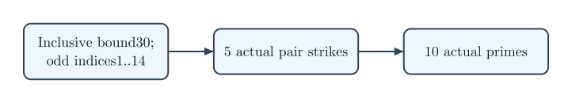
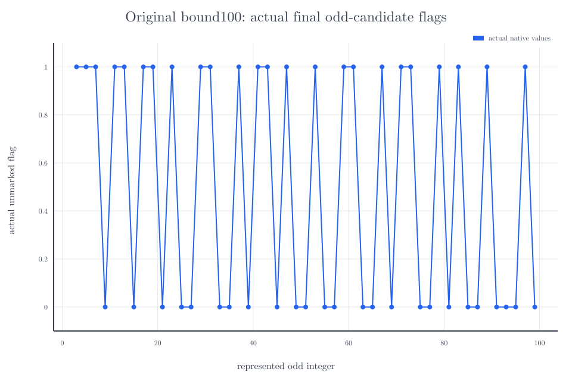
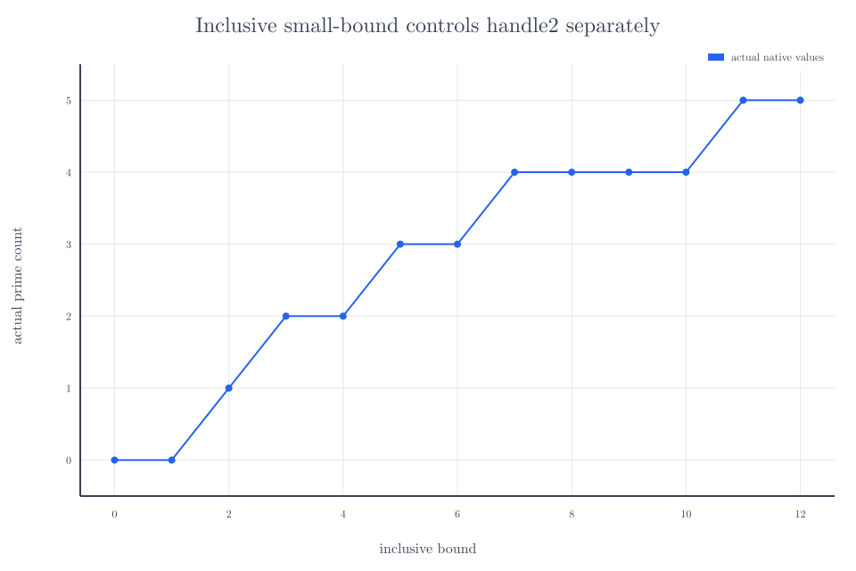
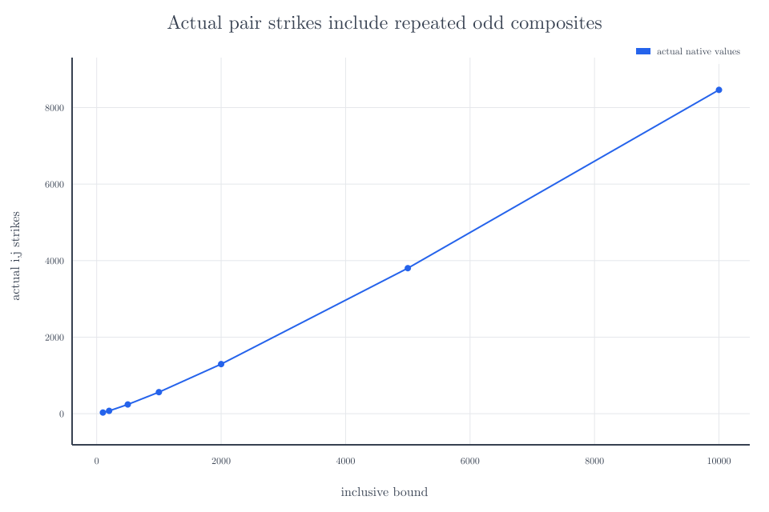

Sundaram sieve: actual odd-composite factor strikes
Abstract
Sundaram marks odd-composite indices and emits the unmarked odd primes, with2 handled separately. Actual pair strikes and marker transitions replace the old report-side re-sieve.
Mechanism and mathematical scope
For k=floor((limit-1)/2), index m=i+j+2ij maps to2m+1=(2i+1)(2j+1). Thus striking all1<=i<=j with m<=k removes every odd composite and no odd prime. Each unmarked i>=1 emits2i+1; emit2 separately when allowed by the inclusive bound. Marker repeats are real work, counted separately from first marks. Division-based bounds and stepped indices avoid overflow in the pair expression. O(limit log limit) is an upper bound, with odd-index linear storage; no wall-time comparison is claimed.
A tiny actual producing history
The table and native concept diagram read the same producing execution. Every block below is a complete editable C++ program.
#include <dm/dm.hpp>
int main() {
namespace a = dm::algorithms;
namespace g = dm::graphics;
std::filesystem::create_directories("build");
auto r = a::sundaram_trace(30);
std::print("| actual i | j | odd index | mapped composite | first mark |\n| ---: | ---: | ---: | ---: | " "--- |\n");
for (const auto &s : r.steps)
std::print("| {} | {} | {} | {} | {} |\n", s.i, s.j, s.index,
2 * s.index + 1, s.newly_marked);
std::print("Actual primes `{}`.\n", r.primes);
g::Diagram concept_diagram(48, 1100);
concept_diagram.node("n0", {0, 0}, "Inclusive bound30; odd indices1..14");
concept_diagram.node("n1", {5, 0},
std::format("{} actual pair strikes", r.strikes));
concept_diagram.node("n2", {10, 0},
std::format("{} actual primes", r.primes.size()));
concept_diagram.edge("n0", "n1").edge("n1", "n2");
concept_diagram.save_svg("build/sundaram_sieve_tiny.svg");
}| actual i | j | odd index | mapped composite | first mark |
|---|---|---|---|---|
| 1 | 1 | 4 | 9 | true |
| 1 | 2 | 7 | 15 | true |
| 1 | 3 | 10 | 21 | true |
| 1 | 4 | 13 | 27 | true |
| 2 | 2 | 12 | 25 | true |
Actual primes [2, 3, 5, 7, 11, 13, 17, 19, 23, 29].

The retained original experiment
#include <dm/dm.hpp>
int main() {
namespace a = dm::algorithms;
namespace g = dm::graphics;
std::filesystem::create_directories("build");
auto r = a::sundaram_run(100);
std::print("Original inclusive100 primes `{}`; count {}; actual strikes {}, distinct marks {}.\n\n| odd " "index | represented odd number | actual survives |\n| ---: | ---: | ---: |\n",
r.primes, r.primes.size(), r.strikes, r.first_marks);
std::vector<double> x, y;
for (std::size_t i = 1; i < r.marked.size(); ++i) {
x.push_back(2 * i + 1);
y.push_back(r.marked[i] ? 0 : 1);
std::print("| {} | {} | {} |\n", i, 2 * i + 1, y.back());
}
auto plot = g::RPlot::create();
plot.lines(x, y, "actual native values", {37, 99, 235}).points(
x, y, {37, 99, 235}, 4).title("Original bound100: actual final odd-candidate flags").x_label("represented odd integer").y_label("actual unmarked flag");
plot.save_svg("build/sundaram_sieve_original.svg");
}Original inclusive100 primes [2, 3, 5, 7, 11, 13, 17, 19, 23, 29, 31, 37, 41, 43, 47, 53, 59, 61, 67, 71, 73, 79, 83, 89, 97]; count 25; actual strikes 30, distinct marks 25.
| odd index | represented odd number | actual survives |
|---|---|---|
| 1 | 3 | 1 |
| 2 | 5 | 1 |
| 3 | 7 | 1 |
| 4 | 9 | 0 |
| 5 | 11 | 1 |
| 6 | 13 | 1 |
| 7 | 15 | 0 |
| 8 | 17 | 1 |
| 9 | 19 | 1 |
| 10 | 21 | 0 |
| 11 | 23 | 1 |
| 12 | 25 | 0 |
| 13 | 27 | 0 |
| 14 | 29 | 1 |
| 15 | 31 | 1 |
| 16 | 33 | 0 |
| 17 | 35 | 0 |
| 18 | 37 | 1 |
| 19 | 39 | 0 |
| 20 | 41 | 1 |
| 21 | 43 | 1 |
| 22 | 45 | 0 |
| 23 | 47 | 1 |
| 24 | 49 | 0 |
| 25 | 51 | 0 |
| 26 | 53 | 1 |
| 27 | 55 | 0 |
| 28 | 57 | 0 |
| 29 | 59 | 1 |
| 30 | 61 | 1 |
| 31 | 63 | 0 |
| 32 | 65 | 0 |
| 33 | 67 | 1 |
| 34 | 69 | 0 |
| 35 | 71 | 1 |
| 36 | 73 | 1 |
| 37 | 75 | 0 |
| 38 | 77 | 0 |
| 39 | 79 | 1 |
| 40 | 81 | 0 |
| 41 | 83 | 1 |
| 42 | 85 | 0 |
| 43 | 87 | 0 |
| 44 | 89 | 1 |
| 45 | 91 | 0 |
| 46 | 93 | 0 |
| 47 | 95 | 0 |
| 48 | 97 | 1 |
| 49 | 99 | 0 |

Explicit controls
#include <dm/dm.hpp>
int main() {
namespace a = dm::algorithms;
namespace g = dm::graphics;
std::filesystem::create_directories("build");
std::vector<double> x, y;
std::print("| inclusive bound | actual primes | actual odd marker cells | actual pair strikes |\n| ---: " "| --- | ---: | ---: |\n");
for (std::uint64_t n = 0; n <= 12; ++n) {
auto r = a::sundaram_run(n);
x.push_back(n);
y.push_back(r.primes.size());
std::print("| {} | `{}` | {} | {} |\n", n, r.primes, r.marked.size(),
r.strikes);
}
auto plot = g::RPlot::create();
plot.lines(x, y, "actual native values", {37, 99, 235}).points(
x, y, {37, 99, 235}, 4).title("Inclusive small-bound controls handle2 separately").x_label("inclusive bound").y_label("actual prime count");
plot.save_svg("build/sundaram_sieve_controls.svg");
}| inclusive bound | actual primes | actual odd marker cells | actual pair strikes |
|---|---|---|---|
| 0 | [] | 0 | 0 |
| 1 | [] | 0 | 0 |
| 2 | [2] | 0 | 0 |
| 3 | [2, 3] | 2 | 0 |
| 4 | [2, 3] | 2 | 0 |
| 5 | [2, 3, 5] | 3 | 0 |
| 6 | [2, 3, 5] | 3 | 0 |
| 7 | [2, 3, 5, 7] | 4 | 0 |
| 8 | [2, 3, 5, 7] | 4 | 0 |
| 9 | [2, 3, 5, 7] | 5 | 1 |
| 10 | [2, 3, 5, 7] | 5 | 1 |
| 11 | [2, 3, 5, 7, 11] | 6 | 1 |
| 12 | [2, 3, 5, 7, 11] | 6 | 1 |

Actual selected work and sensitivity
#include <dm/dm.hpp>
int main() {
namespace a = dm::algorithms;
namespace g = dm::graphics;
std::filesystem::create_directories("build");
std::vector<double> x, y;
std::print("| bound | actual pair strikes | distinct marks | survivor tests |\n| ---: | ---: | ---: | " "---: |\n");
for (std::uint64_t n : {100, 200, 500, 1000, 2000, 5000, 10000}) {
auto r = a::sundaram_run(n);
x.push_back(n);
y.push_back(r.strikes);
std::print("| {} | {} | {} | {} |\n", n, r.strikes, r.first_marks,
r.output_tests);
}
auto plot = g::RPlot::create();
plot.lines(x, y, "actual native values", {37, 99, 235}).points(
x, y, {37, 99, 235}, 4).title("Actual pair strikes include repeated odd composites").x_label("inclusive bound").y_label("actual i,j strikes");
plot.save_svg("build/sundaram_sieve_work.svg");
}| bound | actual pair strikes | distinct marks | survivor tests |
|---|---|---|---|
| 100 | 30 | 25 | 49 |
| 200 | 74 | 54 | 99 |
| 500 | 241 | 155 | 249 |
| 1000 | 563 | 332 | 499 |
| 2000 | 1296 | 697 | 999 |
| 5000 | 3803 | 1831 | 2499 |
| 10000 | 8463 | 3771 | 4999 |

API and interpretation
Complete odd-marker geometry is checked before allocation and actual strikes/capture have separate policies. Default limits bound practical memory/work; a uint64 bound does not imply every such bound can be materialized. The report uses actual producer marker flags and does not independently reimplement the sieve for its figure.
Reusable producers, fixtures and histories live in the canonical C++ library. Captured records own their values and do not come from a separate report replay. Selected counters and record/scalar policies are specified at their API boundaries; they are not peak-byte or wall-time budgets. Synthetic structural inputs are controlled fixtures for these mechanisms.
References
- Sundaram, odd-composite sieve (1934); factor identity derived explicitly above
Verified in the shared ten-document batch: 72 scoped native cases;20 directly
instrumented ASan/UBSan cases;82 executable public examples;327/327 definitions
across23 full scopes;10 hovers;3797 independent records/1769203 checks;frozen
valid-input comparisons across all ten families with cyclic-tree validation
correction recorded;12 checkout/installed standalone headers and linked
ten-family consumer;40 executed programs and40 inspected figures with both
exports. Receipts:
/mnt/projects/datamunge/build/mepml-conversion/batch-384-393/.